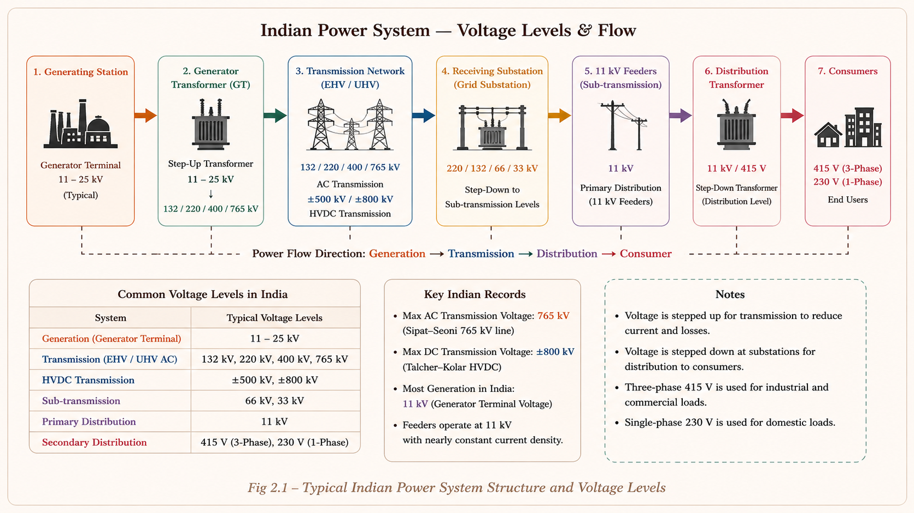
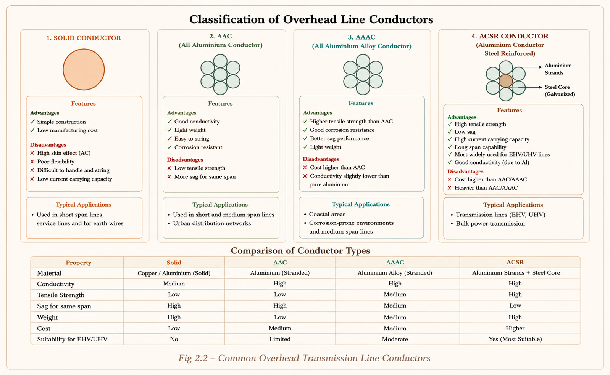
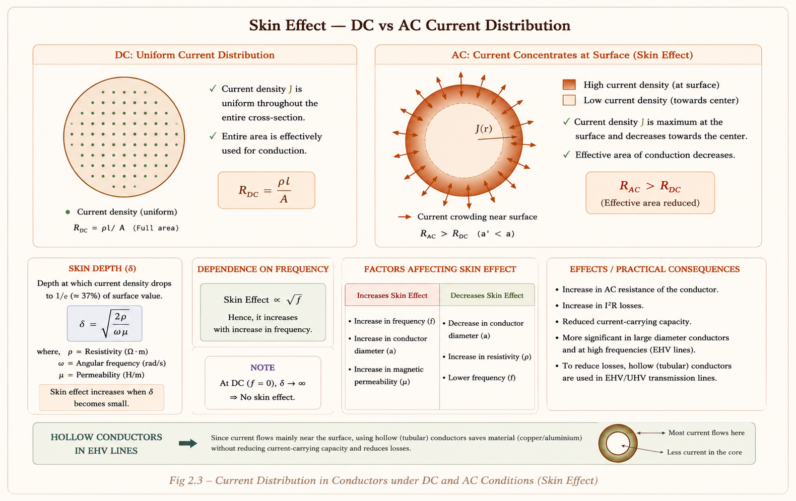
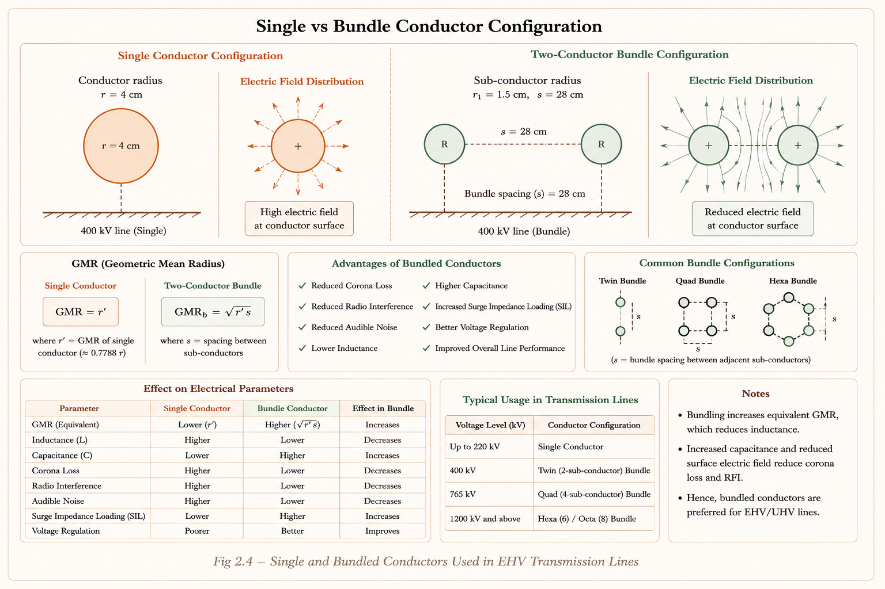
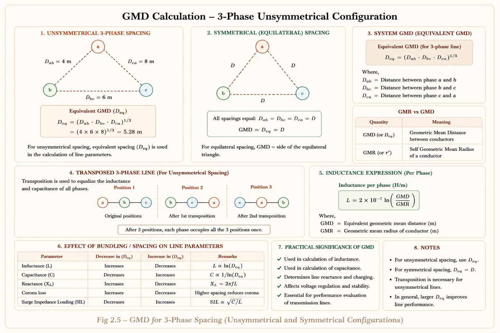
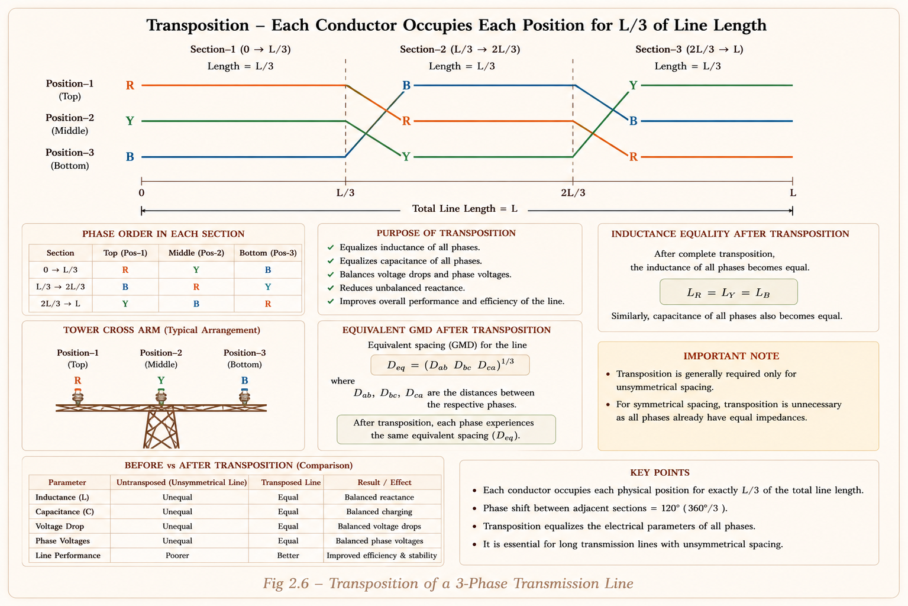
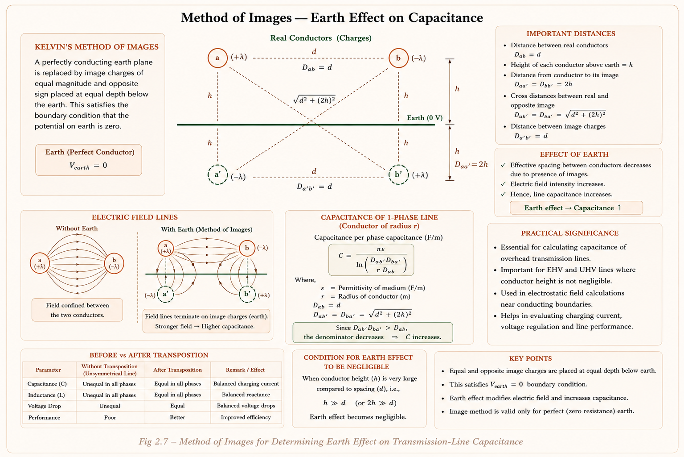

Line constants, conductor types, skin effect, GMR, GMD, bundle conductors, transposition, inductance and capacitance of transmission lines — comprehensive coverage of GATE, IES, and PSU exam concepts with full derivations and solved examples.
Imagine a power plant located 500 km from a city. It generates power economically using large synchronous generators. The challenge is to deliver this bulk power to millions of consumers with minimum loss. The solution is the transmission network — a high-voltage backbone that carries power from generating stations to load centres.
At higher voltage, current reduces for the same power (P = VI cosφ). Since line loss = I²R, reducing current dramatically reduces losses. This is why we transmit at Extra High Voltage (EHV) and step down near consumers.

Power system conductors are carefully engineered for the dual challenge of high conductivity and mechanical strength. Three main types are used in practice.
| Category | Voltage Range | Example in India |
|---|---|---|
| Low Voltage | 220 V (1-ph), 415 V (3-ph) | Household supply |
| High Voltage | 11 kV, 33 kV | Industrial feeders |
| Extra High Voltage (EHV) | 66 kV, 132 kV, 220 kV | State grid |
| Modern EHV | 400 kV | Inter-state transmission |
| Ultra High Voltage (UHV) | 765 kV and above | Sipat–Seoni line |
| HVDC | 500 kV DC | Talcher–Kolar bipolar link |

ACSR (Aluminium Conductor Steel Reinforced) is the most widely used transmission conductor. Its notation is Al strands / Steel strands — for example, 30/7 means 30 aluminium strands and 7 steel strands.
30/7: 30 Al + 7 steel strands. Al count is always greater than steel. | 6/1: 6 Al outer strands + 1 steel core. | 54/7: 54 Al + 7 steel = 61 total strands.
When AC flows through a conductor, the current does not distribute uniformly across the cross-section — it concentrates near the outer surface. This phenomenon is the skin effect, and it increases the effective resistance of the conductor.
Think of the conductor as many concentric cylindrical shells. The innermost shell is surrounded by flux from all outer shells, so it has the highest inductance and highest reactance. High reactance means low current. The outer shell has no surrounding shells, so low inductance → low reactance → most current flows here.

For ACSR conductors, the current distribution is non-uniform both because of skin effect and because two different materials are used. In this case, the entire cross-sectional area is used for the AC resistance calculation:
Students often think ACSR has lower skin effect because it's stranded. Wrong — skin effect increases with larger effective diameter. The key reason ACSR is used is mechanical strength, not lower skin effect. Skin effect is actually higher in ACSR than in small solid conductors.
| Factor | Effect on Skin Effect (R_ac) | Physical Reason |
|---|---|---|
| ↑ Conductor diameter/area | Increases | More flux linkages inside → higher inductance → more current pushed to surface |
| ↑ Magnetic permeability (μ_r) | Increases | Higher flux linkages per unit current inside conductor |
| ↑ Frequency | Increases | Higher rate of flux change → higher inductive opposition → more surface concentration |
| DC supply | Zero skin effect | No rate of change of current → no flux change → uniform distribution |
Skin effect scales with frequency. At 50 Hz (power) vs >1 MHz (communications), the effect is dramatically smaller. Power engineers still account for it through a K-factor (K ≈ 1.02–1.6), but communication engineers must hollow-out conductors or use litz wire.
For operating voltages beyond 270 kV, using a single large conductor per phase is not optimal. Instead, two or more smaller sub-conductors per phase are used in parallel — this arrangement is called a bundle conductor system.

GMD same (mutual distance), GMR increased (self-distance) → field intensity g decreases → corona suppressed
GMR and GMD are the two fundamental geometric quantities needed to calculate the inductance and capacitance of any transmission line configuration. Mastering these is essential for all GATE and IES problems.
GMR is also called the self-GMD or self-distance of a conductor. It accounts for the internal flux linkages of the conductor by replacing the actual radius with a fictitious, smaller equivalent radius.
Real inductance = external inductance + internal inductance. Internal inductance comes from flux inside the conductor. Rather than computing it separately, we use an imaginary radius r' = 0.7788r that "absorbs" the internal flux linkage effect. The conductor then behaves as a hollow shell for inductance calculation purposes.
GMD is the mutual distance between a conductor and the return conductors (or between phases in 3-phase). It is the geometric mean of all the distances between the forward conductor and each return conductor.
where d_pj is the distance from forward conductor p to return conductor j

GMR (self-distance): Used in L calculation with imaginary radius r' = 0.7788r. Also used in C calculation but with actual radius r (not r'). | GMD (mutual distance): Used in both L and C calculations. Never confused with self-distance.
In an unsymmetrical 3-phase transmission line (conductors not at vertices of an equilateral triangle), each phase has a different inductance, leading to unequal voltages and a circulating current that induces noise in nearby communication networks. This is communication interference.

| Line Configuration | Inductance/ph | Voltage/ph | Communication Interference |
|---|---|---|---|
| Untransposed — Symmetrical | Same (equal) | Same | No (\( \phi_r = 0 \)) |
| Untransposed — Unsymmetrical | Unequal | Unequal | Exists (\( \phi_r \neq 0 \)) |
| Transposed — Unsymmetrical | Equal (average) | Equal | Eliminated (\( \phi_r = 0 \)) |
Modern power systems rarely use transposition because it is impractical for long lines. For untransposed unsymmetrical lines, the inductance per phase is taken as the average of the three phase inductances. This is what is used in practice and what GATE sometimes asks about.
The transposition shifts each conductor position by 120° at regular intervals. The residual flux \( \phi_r = \phi_R \angle 0^\circ + \phi_Y \angle 120^\circ + \phi_B \angle 240^\circ \), which is non-zero for untransposed unsymmetrical lines and creates circulating EMF in communication networks.
Inductance = (Magnetic flux linkages) / (Current). A transmission line conductor stores energy in the magnetic field surrounding it. The line inductance opposes changes in current and causes voltage drops proportional to the rate of change of current. The energy stored is E = ½LI².
The two wires of a single-phase line carry equal and opposite currents (+I and −I). The circuit cannot be closed without the return conductor.
\(r' = 0.7788r\) (fictitious radius) | \(d\) = conductor separation (m) | \(r\) = actual radius (m)
Earth is used as the return conductor instead of a second wire. Earth's radius is effectively infinite, so L_b ≈ 0. The conductor height above earth is h.
For any 3-phase configuration with transposition, each phase has the same inductance. This is the most important formula in transmission line theory.
In inductance calculation: use r' = 0.7788r (fictitious radius, accounts for internal flux). In capacitance calculation: use actual radius r (no internal flux linkages for electric field). This is the single most common error in GATE numerical problems.
The capacitance of a transmission line arises because the two conductors (or a conductor and earth) act as plates of a capacitor, separated by the dielectric medium (air). Capacitance stores energy in the electric field: E = ½CV².
For inductance: use imaginary radius r' (internal flux linkages matter). For capacitance: use actual radius r (electric field starts from conductor surface, no "internal" electric flux). This is why L and C use different radius values in their formulas.
Earth is a conducting plane at zero potential. A conductor above earth induces mirror-image charges of opposite polarity below the earth plane — this is Kelvin's Method of Images. Earth effect always increases line capacitance.

Earth effect on capacitance can be safely neglected when d ≪ 2h (conductor spacing much less than twice the height above earth). In this case, the formula reduces to the standard C = 2πε₀/ln(d/r). Most GATE problems specify "neglect earth effect" — but if not specified, you must include it.
This is perhaps the most GATE-tested table in the entire Power Systems subject. Knowing how R, L, C and their reactances change with each parameter is critical for quick MCQ answers.
| Change in Parameter | R | L (\( X_L \)) | C (\( X_C \)) |
|---|---|---|---|
| Line length increases | Increases | Increases | Increases (\( C \uparrow, X_C \downarrow \)) |
| Distance of separation increases | No change | Increases | Decreases (\( X_C \) increases) |
| Conductor radius increases | Decreases | Decreases | Increases (\( X_C \) decreases) |
| Symmetrical (equilateral) spacing | No change | Decreases (vs unsymmetrical) | Increases (vs unsymmetrical) |
| Unsymmetrical spacing | No change | Increases | Decreases (\( X_C \) increases) |
| Earth effect included | No change | No change | Increases (\( X_C \) decreases) |
| Height of conductor increases | No change | No change | Decreases (\( X_C \) increases) |
| Bundle conductor used | Decreases | Decreases | Increases (\( X_C \) decreases) |
\( L = 0.2 \ln(\text{GMD}/\text{GMR}) \). Anything that increases the ratio GMD/GMR will increase L. Bigger separation → bigger GMD → L increases. Bigger conductor → bigger GMR → L decreases. Capacitance behaves inversely: \( C = \frac{2\pi\varepsilon}{\ln(\text{GMD}/r)} \). Same ratio direction, but C is in the denominator of ln → C and L move in opposite directions with spacing.
Given: r = 3 cm = 0.03 m, d = 4 m, equilateral spacing → D_ab = D_bc = D_ca = 4 m
(i) GMR (Self GMD):
For a single round conductor: GMR = r' = 0.7788 × r
Since all three conductors are identical, the system GMR = GMR of any one conductor = 2.34 cm.
(ii) GMD:
For equilateral spacing, GMD = d = 4 m (as expected).
For symmetrical (equilateral) configuration, GMD = spacing d. For unsymmetrical: GMD = ∛(D_ab·D_bc·D_ca) > equivalent equilateral spacing — this is an important GATE observation.
Given: f = 50 Hz, diameter = 20 mm → r = 10 mm = 10 × 10⁻³ m, d = 3 m
Step 1 — Find fictitious radius r':
Step 2 — Inductance per conductor:
Step 3 — Inductive reactance per conductor:
This is X per conductor. Total circuit inductive reactance X_total = 2 × 0.374 = 0.748 Ω/km (both conductors in series). GATE may ask for either — read the question carefully.
Given: r = 0.328 cm = 0.328 × 10⁻² m, d = 3 m
Answer: (b) 0.00817 μF/km
Self GMD of a phase (bundle of 2 sub-conductors):
GMD of the system:
(Phase spacings: a₁a₂ to b₁b₂ = 6 m; b₁b₂ to c₁c₂ = 6 m; a₁a₂ to c₁c₂ = 12 m — neglecting sub-conductor spacing within each phase compared to phase spacing.)
Key rule: \(X_L \propto \ell\) and \(X_C \propto 1/\ell\)
Answer: X_L = 25 Ω, X_C = 2000 Ω for 50 km.
The following topics consistently appear in GATE EE (Power Systems section) and IES E&T:
Statement: "The Geometric Mean Radius (GMR) of a solid cylindrical conductor of radius r is r' = 0.7788r. This is because…"
Explanation: GMR = r' = e^(−¼)·r = 0.7788r. The factor e^(−¼) comes from the internal flux linkage contribution. The imaginary radius r' replaces the real radius r in the external inductance formula to give the correct total inductance. This is NOT about skin effect — skin effect increases R_ac, it does not define GMR.
When a single conductor per phase is replaced by a bundle of two sub-conductors (keeping total metal area approximately same), which of the following is correct?
Explanation: Bundling increases the Self-GMD (GMR of bundle). Since L = 0.2 ln(GMD/GMR) — larger GMR → lower L. Since C = 2πε/ln(GMD/r) — larger effective r means smaller ln term → higher C. Both changes are beneficial: less reactive voltage drop, more natural charging power.
Which of the following statements about transposition of 3-phase overhead lines is/are correct?
1. Transposition makes the inductance of each phase equal | 2. Transposition eliminates communication interference | 3. Transposition is mandatory for all power lines
Explanation: Transposition equalises L per phase (statement 1 ✓) and eliminates communication interference by making ϕ_r = 0 (statement 2 ✓). However, it is NOT mandatory and is actually an old concept not suitable for modern power systems where unbalanced loading and line geometry make it impractical (statement 3 ✗).
In the calculation of inductance and capacitance of a single-phase 2-wire overhead transmission line of conductor radius r and spacing d, which of the following is correct?
Explanation: This is the single most commonly tested conceptual trap. Inductance accounts for internal magnetic flux linkages → use r' = 0.7788r. Capacitance depends on the electric field from the conductor surface → use actual r. There are no "internal electric flux linkages" in a solid conductor.
Inductance (L) uses the "lying" fictitious radius r' = 0.7788r — pretending the conductor is smaller to account for internal flux. Capacitance (C) uses the "clear" actual radius r — because electric fields start from the real surface. Never mix these up.
L decreases, Impedance (Z₀) decreases, Capacitance increases, Corona suppressed, SIL (Surge Impedance Loading) increases — five effects of bundling, in order.
Have a question on GMR, GMD, bundle conductors, skin effect, or line parameters? Type below or pick a suggestion.
EHV used to reduce \( I^2R \) losses. \( \eta = 1 - \frac{k}{V \cos\phi} \). Max AC India: 765 kV (Sipat–Seoni). Max DC: 500 kV (Talcher–Kolar). \( V > 220 \text{ kV} \): conductor selected on corona/field.
AC current concentrates at surface. \( R_{ac} > R_{dc} \). \( K \approx 1.6 \) for ACSR. \( R_{ac} \propto A \cdot \mu_r \cdot f \). DC has zero skin effect. Higher area/frequency/permeability → more skin effect.
Used above 270 kV. Sub-conductor \( r_1 = r/\sqrt{n} \). GMR increases → L decreases, C increases. \( Z_0 \) decreases, SIL increases. Corona suppressed. Communication interference reduced.
GMR = \( r' = 0.7788r \) (self-distance). GMD = \( \sqrt[3]{D_{ab} \cdot D_{bc} \cdot D_{ca}} \) (mutual). L uses GMR = \( r' \). C uses actual r. GMD same for L and C calculations. Bundle GMR = \( \sqrt{r' \cdot s} \) for 2-sub.
L/ph = \( 0.2 \ln(\text{GMD}/\text{GMR}) \text{ mH/km} \). C/ph = \( \frac{2\pi\varepsilon_0}{\ln(\text{GMD}/r)} \text{ F/m} \). \( X_L \propto \ell \). \( X_C \propto 1/\ell \). Bigger spacing → \( L\uparrow C\downarrow \). Bigger radius → \( L\downarrow C\uparrow \).
Shifts each conductor 120° per section over L/3. Equalises L per phase. Eliminates \( \phi_r \) → no communication interference. Old concept — not mandatory. Untransposed: use average L.
All technical content is derived from the following standard textbooks and learning resources. All explanations, derivations, diagrams and examples are original to Aarova AI.